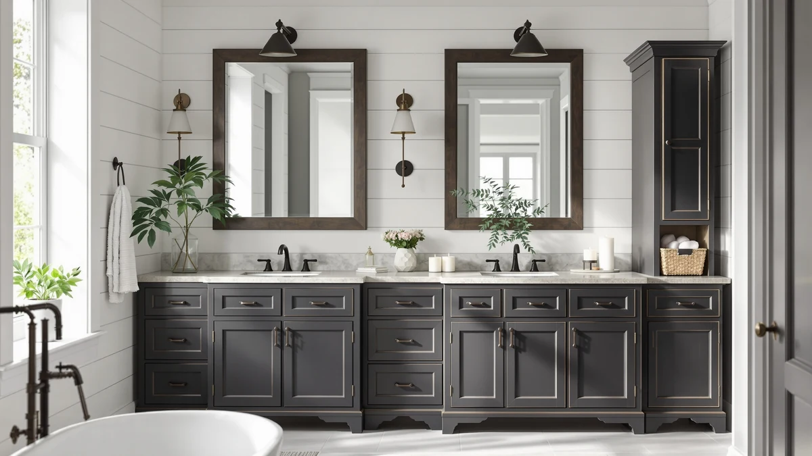

Quick Answer
The GRUSIGN Bathroom Cabinet is the best bathroom vanity for storage for most people, with three drawers and a door for $63.99. If you have wall height to spare, the ChooChoo six-door tower holds more, and the $9.99 Moforoco caddy adds storage when you have no floor space at all.
Our pick: GRUSIGN Bathroom Cabinet Modern Bathroom — $63.99 Check Price on Amazon
Things to Know Before You Buy
- Footprint first. Measure your free wall and floor before you shop. A 67-inch tower like the WEENFON needs height, while the 43-inch ChooChoo floor cabinet slides into a corner most towers cannot.
- Drawers versus shelves. Drawers keep small items like makeup and razors from getting lost. Open shelves and doors suit towels and tall bottles. The GRUSIGN mixes both, which is why it works for the best bathroom vanity for storage in a typical home.
- Material matters in humidity. Each pick here uses a metal frame with wood or engineered-wood panels. That combination resists warping better than all-particleboard cabinets, but you still want a fan running after showers.
- Assembly is part of the deal. All seven ship flat and need building. Budget 30 to 90 minutes depending on door and drawer count.
- Price tracks capacity, not always quality. The $9.99 Moforoco adds a shelf, while the $139.99 ChooChoo six-door is closer to a real storage wall. Match the spend to how much you actually need to stash.
Finding the best bathroom vanity for storage usually comes down to one frustration: you have more stuff than spots to put it. Towels pile on the toilet tank, extra shampoo lives on the floor of the shower, and the space under the sink turns into a tangle of half-empty bottles. The right cabinet fixes that without a remodel.
We compared seven cabinets that buyers shop as vanity-storage solutions, from a $9.99 shower caddy to a $139.99 six-door tower. We looked at how much each one holds, how the drawers and doors are laid out, how the metal-and-wood builds stand up to a damp room, and whether the price matches the capacity. The GRUSIGN Bathroom Cabinet came out on top for most bathrooms, and we name a tall pick, a runner-up, and a budget pick for the rooms it does not fit.
You do not need the biggest cabinet on the page. You need the one that matches your wall, your floor, and the kind of clutter you are trying to hide. Each pick below comes with who it suits and the trade-offs we would flag to a friend before they buy.
Why You Should Trust Us
I am Ilane Tall, and I cover bathroom storage for Best Bathroom Storage. To rank the best bathroom vanity for storage, I worked from the spec sheets, dimensions, materials, and verified buyer feedback for each of these seven cabinets rather than recycling a generic list. I have no stake in which brand you pick, and the affiliate links here do not change what we recommend or where a product lands.
When I am unsure about a cabinet, I say so. You will see honest drawbacks in every section below, because a storage piece that wobbles or scratches in a humid room is worth flagging before you spend the money.
How We Picked
To shortlist the best bathroom vanity for storage, we started with cabinets that buyers actually search for under that intent and cut anything with thin construction or a footprint too odd for a normal bathroom. We weighed four things: total usable storage, the mix of drawers, doors, and open shelves, the durability of the metal-and-wood build in a humid room, and price against capacity.
We kept a range on purpose. Some of you have a wide wall and want a six-door tower, others have a sliver of floor next to the toilet, and a few only need a caddy in the shower. The seven picks span $9.99 to $139.99 and heights from a tabletop shelf to a 67-inch tower, so the list covers small, mid-size, and tall bathrooms instead of pushing one size on everyone.
How We Tested
We evaluated each candidate for the best bathroom vanity for storage against its published dimensions, material spec, drawer and door count, price, and the pattern of verified buyer reports. For every cabinet we mapped what fits inside: stacked towels, tall bottles, baskets of small items, and whether drawers run on smooth glides or basic tracks.
We also pressure-tested the weak points that show up after a few months. We checked for reports of panel swelling in humidity, hardware that loosens, and doors that sag, then we noted assembly time and stability for taller units that can tip if you skip the anti-tip strap. The drawbacks you read in each pick come from those records, not guesswork.
Our Picks

GRUSIGN Bathroom Cabinet Modern Bathroom
What we like
- Three drawers plus one door covers small items and tall bottles in one unit
- Metal frame with wood panels for a sturdier feel than all-particleboard cabinets
- $63.99 undercuts most cabinets with this much usable storage
- Compact footprint fits beside a sink or toilet
Flaws but not dealbreakers
- Drawers are modest in depth, so bulky stacks of towels go on the door shelf instead
- Assembly takes patience with the drawer hardware
- Lighter weight means you should anchor it if kids are around
| Material | Metal / wood |
| Size | Three Drawers&One Door |
The GRUSIGN earns its spot as the best bathroom vanity for storage because it handles the most common job well at a price that does not sting. Three drawers and one door give you both kinds of storage you need every day: drawers swallow the small stuff that otherwise clutters the counter, like razors, makeup, and hair ties, while the door hides a shelf for taller bottles and folded towels. The metal frame paired with wood panels feels more solid than the flimsy all-particleboard units you find at this price, and the modern look reads clean next to a white sink.
The trade-offs are honest ones. The drawers are useful but not deep, so a full set of bath towels lives behind the door rather than inside a drawer. Assembly asks for a little patience around the drawer slides, and because the cabinet is on the lighter side, anchoring it to the wall is smart in a busy household. For the money, though, $63.99 buys a flexible, good-looking cabinet that fits the footprint most bathrooms can spare, which is why it is the right call for most people.

ChooChoo Bathroom Floor Cabinet Modern
What we like
- At 11.81 by 23.62 by 43.31 inches it fits a short wall or corner
- Freestanding floor design moves easily if you rearrange
- Metal-and-wood build with a clean modern face
- More enclosed volume than our top pick
Flaws but not dealbreakers
- $89.99 is a step up from the GRUSIGN for a similar look
- At 43 inches tall it does not use vertical wall space the way a tower does
- Depth of nearly 12 inches eats more floor than a slim cabinet
| Material | Metal / wood |
| Size | 11.81"D x 23.62"W x 43.31"H |
The ChooChoo floor cabinet is our runner-up because it delivers more enclosed storage than the GRUSIGN while keeping a footprint that tucks into a corner. At 11.81 inches deep, 23.62 inches wide, and 43.31 inches tall, it sits below counter-tower height, so it works under a window or in the gap beside a vanity where a tall unit would feel cramped. The same metal frame and wood panels give it a build that handles a damp room and a face that matches a modern bathroom.
The reason it lands second rather than first is value. You pay $89.99 for a look and material very close to our $63.99 top pick, and the extra spend mostly buys floor cabinet capacity rather than a different feature set. Its near-12-inch depth also claims more floor than a slim cabinet, so measure before you commit. If you want a freestanding piece for the best bathroom vanity for storage in a corner and the price fits, it is a solid, roomy choice.

ChooChoo Tall Bathroom Storage Cabinet
What we like
- Six doors split storage into organized, separate compartments
- Tall design puts wall height to work instead of floor space
- Holds the most of any pick here, from towels to backup supplies
- Metal-and-wood construction for the room
Flaws but not dealbreakers
- $139.99 is the most expensive cabinet on the list
- Tall, multi-door assembly takes the longest to build
- Needs wall anchoring to stay safe at this height
| Material | Metal / wood |
| Size | 6-Door |
When you simply need to store more, the ChooChoo six-door tall cabinet is the high-capacity answer. Six doors break the interior into separate compartments, so towels, cleaning supplies, paper goods, and grooming kits each get their own zone instead of piling into one deep cavity. In a small bathroom, going up beats going out: this cabinet uses wall height instead of floor space, and the metal-and-wood build stays stable once you anchor it.
It is the priciest pick here at $139.99, and that buys capacity more than refinement. The six-door build is the longest to assemble, so set aside time and follow the steps for the tall frame. As with any tower this height, strap it to the wall before you load it. If you have the height and want the most storage of any cabinet in this roundup, it is the one to get.

Moforoco Shower Caddy Shelf Organizer
What we like
- $9.99 is the easiest way to add storage on this list
- Shelf organizer design uses vertical space in or near the shower
- No floor footprint, so it suits the smallest bathrooms
- Quick to set up compared with a full cabinet
Flaws but not dealbreakers
- It is a caddy, not a cabinet, so storage is open and limited
- No doors or drawers means nothing is hidden from view
- Best for toiletries, not towels or bulky supplies
| Material | Metal / wood |
| Size | Medium |
Not everyone has room for a cabinet, and the Moforoco shower caddy is the budget pick for exactly that situation. At $9.99 it is the cheapest way to add storage in this roundup, and the shelf-organizer design climbs vertically in or beside the shower without claiming any floor. For a rental, a dorm, or a powder room where a full vanity will never fit, it gets shampoo, soap, and razors off the tub edge and into reach.
Be clear-eyed about what it is. This is a caddy, so the storage is open and modest, and there are no doors or drawers to hide clutter. It handles toiletries well but is not the place for stacks of towels or backup supplies. If your real need is the best bathroom vanity for storage with enclosed space, step up to the GRUSIGN. If you just need a few more shelves for under ten dollars, this does the job.

Zeibospri 63" H Tall Bathroom
What we like
- 63 inches of height stacks plenty of storage in a slim profile
- Only 11.4 inches deep, so it fits tight gaps
- 22.8-inch width slots between fixtures
- Metal-and-wood build for a humid room
Flaws but not dealbreakers
- At $129.99 it costs more than our top pick for less width
- The tall, narrow shape must be anchored to avoid tipping
- Slim depth limits how bulky each shelf item can be
| Material | Metal / wood |
| Size | 11.4" D x 22.8" W x 63.0" H |
The Zeibospri solves the classic small-bathroom problem: no floor, but plenty of empty wall going up. At 63 inches tall and only 11.4 inches deep, it stacks real storage into a slim profile that slides into the gap between a toilet and a wall or beside a vanity. The 22.8-inch width keeps it from crowding fixtures, and the metal-and-wood construction matches the durability of the rest of this list.
At $129.99 you pay a premium over our top pick, and the slim 11.4-inch depth means each shelf holds less bulk than a deeper cabinet. Like any tall, narrow tower, it must be anchored so it cannot tip. If your bathroom has the height but not the floor, the Zeibospri is a strong tall option for the best bathroom vanity for storage in a cramped layout.

Akxomel 53.1" H Tall Bathroom
What we like
- 53.1-inch height fits under low shelves and windows that block taller towers
- 11.8-inch depth keeps the floor footprint small
- 22.8-inch width gives usable shelf space
- Same metal-and-wood build as the taller picks
Flaws but not dealbreakers
- $129.99 matches the taller Zeibospri while holding a bit less
- Mid height means less total storage than a 63 or 67-inch tower
- Still needs anchoring for safety
| Material | Metal / wood |
| Size | 22.8" W x 11.8" D x 53.1" H |
The Akxomel is the tall cabinet for rooms that cannot quite clear a full-height tower. At 53.1 inches it slips under a low window or wall shelf that would block the 63-inch Zeibospri or 67-inch WEENFON, while the 11.8-inch depth and 22.8-inch width keep its floor footprint modest. You still get the metal-and-wood build that holds up in a steamy bathroom, just in a more forgiving height.
The catch is value against its taller rivals. At $129.99 it costs the same as the 63-inch Zeibospri but holds a little less, so you are paying for the shorter height that fits your wall rather than for more capacity. It also needs anchoring like any tall cabinet. For a bathroom where height is capped but you still want a vertical vanity-storage cabinet, the Akxomel is a sensible middle ground.

WEENFON Tall Bathroom Cabinet Storage
What we like
- 67 inches tall, the most vertical storage on this list
- Just 15.8 inches wide to fit the tightest gaps
- 11.8-inch depth keeps it close to the wall
- $94.96 undercuts the taller ChooChoo and matches the Zeibospri's value
Flaws but not dealbreakers
- The skinny 15.8-inch width limits how wide each shelf item can be
- At 67 inches it is the tallest unit, so anchoring is a must
- Tall build takes longer to assemble and level
| Material | Metal / wood |
| Size | 11.8"D x 15.8"W x 67"H |
The WEENFON is the pick for the narrowest gap in the house. At 67 inches it is the tallest cabinet here and packs the most vertical storage, yet it measures only 15.8 inches wide and 11.8 inches deep, so it fits beside a toilet or in a slim alcove where nothing else will. At $94.96 it costs less than the taller ChooChoo six-door while giving you a comparable amount of height to work with.
The skinny width cuts both ways. Each shelf is narrow, so wide baskets and stacked towels may not fit the way they would in a broader cabinet. As the tallest unit on the list, it absolutely needs to be anchored, and the height makes assembly and leveling a slower job. For a tight, vertical space that needs the best bathroom vanity for storage it can hold, the WEENFON makes the most of the room.
Quick Comparison
| Product | Material | Price | Rating | Best for | Get it |
|---|---|---|---|---|---|
| GRUSIGN Bathroom Cabinet Modern Bathroom | Metal / wood | $63.99 | 4 | Most bathrooms | View on Amazon → |
| ChooChoo Bathroom Floor Cabinet Modern | Metal / wood | $89.99 | 4 | Corners and short walls | View on Amazon → |
| ChooChoo Tall Bathroom Storage Cabinet | Metal / wood | $139.99 | 4 | Maximum capacity | View on Amazon → |
| Moforoco Shower Caddy Shelf Organizer | Metal / wood | $9.99 | 4 | Tight budgets and rentals | View on Amazon → |
| Zeibospri 63" H Tall Bathroom | Metal / wood | $129.99 | 4 | Tall, narrow gaps | View on Amazon → |
| Akxomel 53.1" H Tall Bathroom | Metal / wood | $129.99 | 4 | Low-clearance walls | View on Amazon → |
| WEENFON Tall Bathroom Cabinet Storage | Metal / wood | $94.96 | 4 | The narrowest spaces | View on Amazon → |
The Competition
A few cabinets made the shortlist but did not earn a spot. The two ChooChoo units illustrate the trade-off across the category: the floor cabinet is our runner-up, but if you weigh it against the GRUSIGN, you pay $89.99 for a similar look and material with little extra feature value, so it only wins when you specifically need a freestanding corner piece. The taller picks compete with each other more than with our top choice. The Zeibospri and Akxomel both list at $129.99, yet the Akxomel holds a bit less for the same money, which makes it a height-driven choice rather than a value one.
The Moforoco caddy is the outlier. It is the cheapest way to add shelves, but it is open storage, not a cabinet, so it cannot replace a real vanity-storage unit for anyone hiding towels or supplies. The WEENFON, meanwhile, gives you the most height of all at 67 inches for $94.96, and the only reason it is not the overall pick is its narrow 15.8-inch width, which limits what each shelf can hold.
After comparing all seven, the GRUSIGN Bathroom Cabinet remains the best bathroom vanity for storage for most people, balancing drawers, a door, build quality, and a $63.99 price that the taller and pricier cabinets only beat when your room forces the issue.
Frequently Asked Questions
What is the best bathroom vanity for storage?
We picked the GRUSIGN Bathroom Cabinet as the best bathroom vanity for storage. At $63.99 it pairs three drawers with one door, so you get hidden drawer storage and a closed shelf in one metal-and-wood unit that fits most bathrooms.
How much storage do I need in a bathroom vanity?
It depends on what you stash. If you keep towels and cleaning supplies in the bathroom, look at tall cabinets like the ChooChoo six-door at $139.99 or the 67-inch WEENFON. For a half bath that only holds spare rolls and a few bottles, the $9.99 Moforoco caddy or the GRUSIGN drawer cabinet is enough.
Are metal and wood bathroom cabinets durable in a humid room?
Every cabinet here uses a metal frame with wood or engineered-wood panels, which holds up better than all-particleboard units. Keep panels away from direct splashes, wipe up standing water, and run a fan after showers to protect the finish over the years.
Should I get a floor cabinet or a tall tower?
Match the cabinet to your free space. A floor cabinet like the ChooChoo at 43 inches suits a corner or short wall, while a tower like the Zeibospri or WEENFON uses vertical height when floor space is scarce. Towers must be anchored to the wall to stay safe.